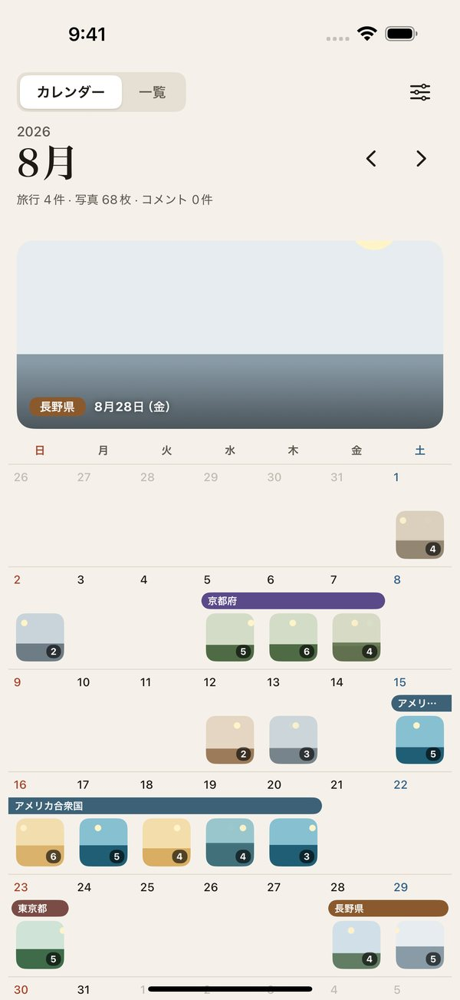
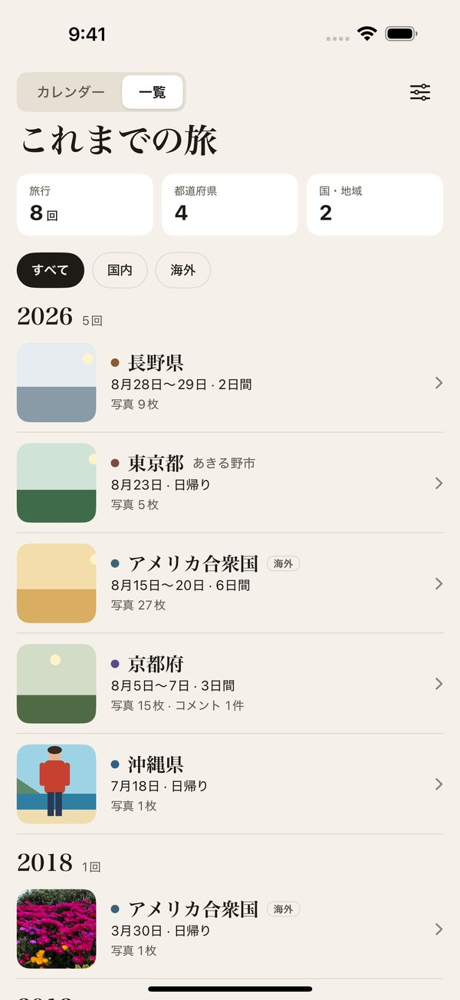
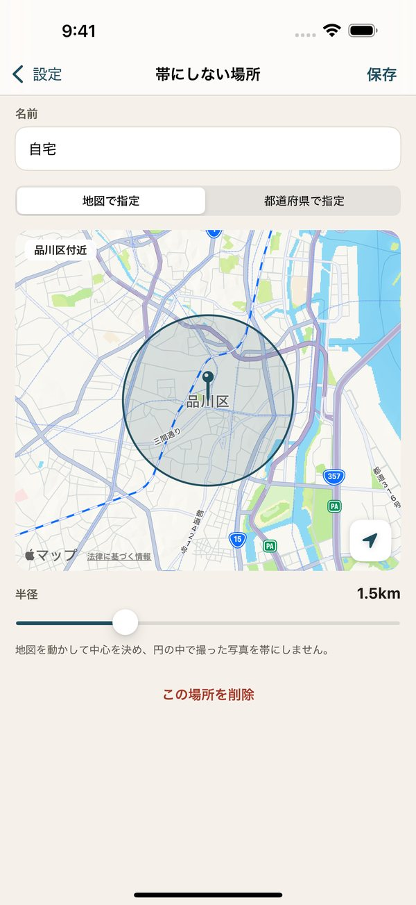
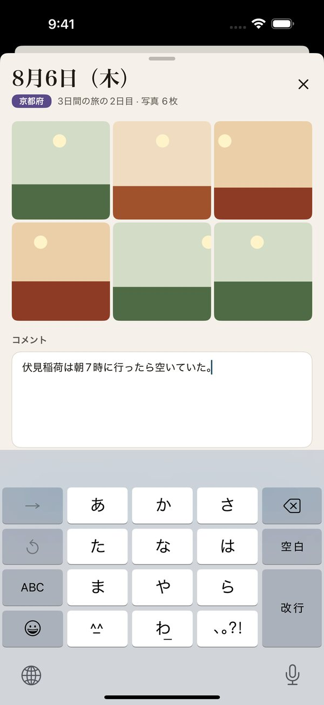
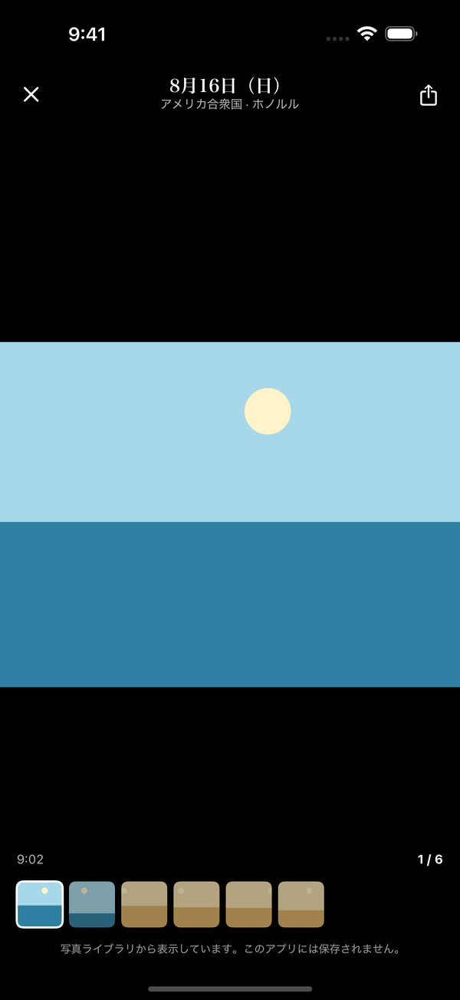

日記はめんどい。だから書かなくていい旅日記です。写真の撮影日と撮影場所から、いつ・どこへ旅行したかを自動でカレンダーに並べます。残したい日だけ、一言コメントを。 Keeping a diary is a chore — so this one writes itself. Atokara Travel Diary reads when and where your photos were taken and lays your trips out on a calendar automatically. Add a short note only on the days you want to.
iPhone 用 · 写真はこのアプリに保存されず、外部にも送られません For iPhone · Your photos are never copied into the app or uploaded

自宅を登録するだけ。あとは写真から旅行を見つけて、カレンダーに帯で表示します。Register your home once. Trips are found from your photos and shown as bands on the calendar.
「京都府」「アメリカ合衆国」のように、行き先ごとに色の帯でまとめます。Each trip becomes a colored band — by prefecture or state at home, by country abroad.
写真ライブラリを参照して表示するだけ。画像をアプリにコピーしたり、外に送ったりしません。The app only reads your library to show it. Images are never copied into the app or sent anywhere.
カレンダーを中心に、あとから旅を振り返るための機能をそろえました。Built around a calendar, for looking back on your travels.
写真のある日にはサムネイルが並び、数秒ごとにふわっと切り替わります。旅行の日には行き先の帯。月の上には、その月の旅の写真がゆっくり流れます。Days with photos show thumbnails that gently change every few seconds. Trip days get a band with the destination, and each month is topped with a slowly drifting photo from that month's trips.

年ごとに旅を並べ、旅行の回数・行った都道府県の数・国の数を数えます。近場の日帰りなら「東京都 あきる野市」のように市区町村まで表示します。Trips are grouped by year, with counts of trips, prefectures and countries. Day trips near home even show the city name.

地図で中心と半径を決めるか、都道府県まるごとを選ぶだけ。いくつでも登録できます。そこで撮った写真はカレンダーに出さず、旅行にもしません。Set a spot on the map with a radius, or pick a whole prefecture — as many as you like. Photos taken there are left off the calendar and never become a trip.

日付をタップすると、その日の写真とコメント欄が開きます。コメントは iCloud で、同じ Apple Account の iPhone どうしに同期されます。Tap a date to see that day's photos and jot a note. Notes sync between your iPhones through your own iCloud.

左右にスワイプしてその日の写真を送り、ピンチで拡大、動画も再生できます。写真はその場で読んで表示するだけです。Swipe through the day's photos, pinch to zoom, and play videos. Photos are loaded on the spot, just for viewing.
旅行の判定も、写真の演出も、すべて端末の中で行います。Trip detection and photo effects all run on the device.
写真ライブラリを参照するだけ。画像をアプリに保存したり、サーバーへ送ったりしません。The app reads your library for display only — no copies, no uploads.
都道府県・国の判定は、アプリに入った地図データでオフラインで行います。Prefectures and countries are identified offline with map data bundled in the app.
広告や利用状況の解析の仕組みは入っていません。No advertising or analytics SDKs.
困ったときはこちらをご覧ください。If something isn't working as expected, start here.
旅行は、写真に記録された撮影場所から判定します。カメラの位置情報がオフのときに撮った写真では判定できません。また「設定」で写真へのアクセスが「選択した写真のみ」になっていると、選んだ写真だけで判定します。「すべての写真」にすると自動で見つかります。Trips are detected from the location saved in each photo, so photos taken with Location Services off can't be used. If photo access is set to "Selected Photos", only those photos are checked — allow "All Photos" to find trips automatically.
撮影場所（位置情報）が記録されていない写真は表示しません。Web や SNS から保存した画像、位置情報をオフにして撮った写真などが当てはまります。スクリーンショットと画面収録も表示しません。旅の記録に関係する写真だけを並べるためです。Photos without a saved location aren't shown — for example images saved from the web or social media, or photos taken with Location Services off. Screenshots and screen recordings are hidden too, so only your travel photos appear.
「設定」→「帯にしない場所」に、自宅や会社、よく行く場所を登録してください。地図の範囲でも、都道府県まるごとでも指定できます。Add your home, workplace or other everyday places under Settings → Home & everyday places, either as an area on the map or as a whole prefecture.
iOS には、特定の写真や日付を指定して写真アプリを開く仕組みが用意されていません。そのため、このアプリの中で写真を表示しています（写真を保存することはありません）。iOS doesn't let apps open the Photos app at a specific photo or date, so photos are shown inside this app instead — still without saving them.
「設定」→「海外のまとめ方」で「州・県ごとに分ける」をオンにすると、「アメリカ合衆国」ではなく「ハワイ州」のように表示します。Yes — turn on "Split by state/province" in Settings, and a trip will show as "Hawaii" instead of "United States".
両方の iPhone で同じ Apple Account の iCloud にサインインしているか確認してください。同期には少し時間がかかることがあります。Make sure both iPhones are signed in to iCloud with the same Apple Account. Syncing can take a little while.
ご意見・不具合のご報告は、こちらまでお気軽にどうぞ。Questions, feedback or bug reports are welcome.